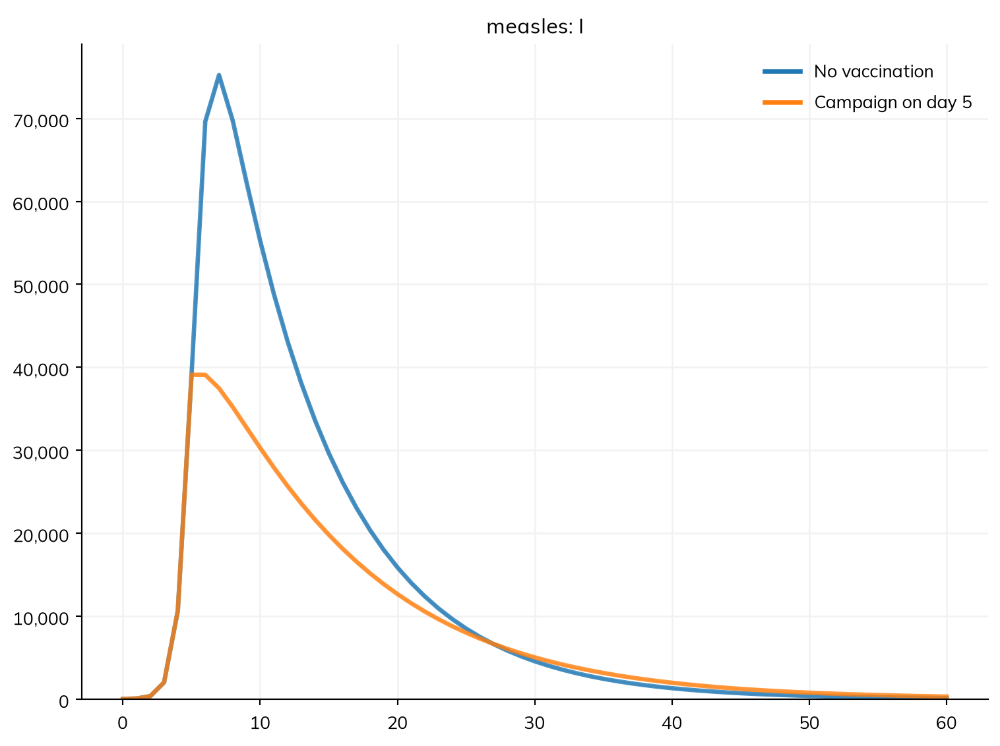
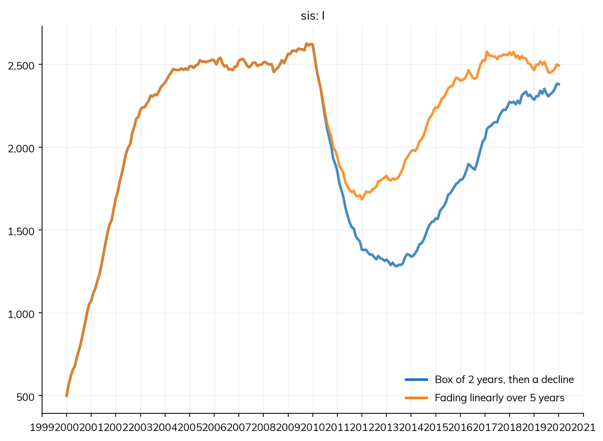
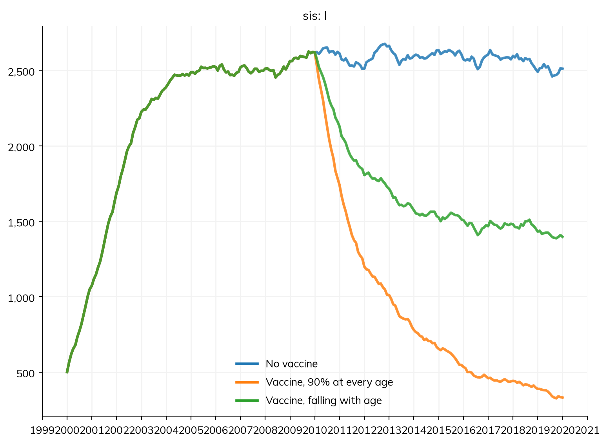

Vaccination, screening, and treatment programs have two parts: what is given (a vaccine, a test, or a drug: a product), and the delivery, which says who gets it, when, and how many. Starsim keeps the two apart, because programs do: an intervention decides who gets something and when, while the product says what happens to a person when they get it. The same vaccine can then be given routinely to infants in one scenario and in a campaign in another, without defining the vaccine again.
This page covers products: vaccines, tests, and treatments, how their protection wanes, and products of your own. Deliveries (routine and campaign delivery, coverage, capacity, eligibility, and delivery triggered by events) and changes to a model’s parameters, such as distancing or school closures, which need no product, are on Interventions. The cost of products is on Costs. The tutorial T5 – Interventions and scenarios uses a vaccine for measles, and A4 – Interventions uses tests and treatment with agents.
A vaccination campaign
There is one delivery for each kind of product: ss.vaccinate(), ss.screen(), and ss.treat(). Each takes the product’s own keywords (a vaccine’s efficacy, a test’s sensitivity) and makes the product, along with how it is delivered. Here a measles campaign reaches 90% of people on day 5 of an outbreak, with a vaccine that cuts the chance of infection by 95%:
import numpy as npimport starsim as ssS, I, R = ss.states('S I R')infection = S >> I @1.9*I # β = 1.9 per dayrecovery = I >> R @ ss.days(8) # Infectious for 8 days on averagemeasles = ss.Disease(infection, recovery, init_prev=0.0001)vaccination = ss.vaccinate(efficacy=0.95, coverage=0.9, at=[ss.days(5)])kw =dict(total_pop=100_000, stop=ss.days(60), verbose=0)scenarios = {'No vaccination': ss.Sim(measles, **kw),'Campaign on day 5': ss.Sim(measles, interventions=vaccination, **kw),}msim = ss.parallel(scenarios)msim.plot('measles.I')

A vaccine protects only those not yet infected, so the sooner the campaign, the more it prevents; coverage (the share reached) and efficacy (the protection of those reached) are separate numbers, and both matter. Interventions are given to the sim with interventions=, singly or as a list. A delivery takes its name from the variable it is assigned to (vaccination here), and has results of its own: the number delivered on each step, the number eligible, and the coverage reached (and cost, if the product has one). Name a delivery after the activity (vaccination, screening, treatment), since the product takes the name of the thing (vaccine, test, drug).
A product is made explicitly only where it is the topic, or where one product is given by several deliveries (see below).
The examples below this point use a curable infection with no lasting immunity, over 20 years, as an SIS model run as agents (since some of what follows depends on each person’s own history):
S, I = ss.states('S I')infection = S >> I @ ss.peryear(2)*I # β = 2 per yearrecovery = I >> S @ ss.years(1) # Infected for a year on average, then susceptible againsis = ss.Disease(infection, recovery, init_prev=0.1)kw =dict(n_agents=5000, start=2000, stop=2020, dt=ss.months(1), verbose=0)
With R0 = 2 × 1 = 2, half of people are infected at any time once the infection is endemic.
Vaccines
A vaccine’s efficacy is its protection against infection: the chance of infection of everyone who holds it is multiplied by 1 − efficacy. A dict gives efficacy against several things: acquisition (the chance of infection), transmission (how infectious a vaccinated person is if infected), mortality (the chance of dying of the disease), or any named transition of the disease (whose rate it scales).
By default a vaccine is leaky: everyone vaccinated is partly protected. With leaky=False it is all or nothing: a share efficacy of those vaccinated are fully protected, and the rest not at all. The two give the same protection on the first exposure, but differ after many exposures, since under a leaky vaccine everyone vaccinated is still infected eventually. waning= is how protection fades: a duration means it is lost after an exponentially distributed time with that mean. Here are all three, given to half of people in 2010:
doses=[0.85, 1.0] gives a vaccine in doses, with the share of the full protection after each; each delivery to someone who already holds the vaccine gives the next dose.
Protection can also fade by its own shape. ss.box(dur=..., decay=...) is full protection for dur, then (with decay=) an exponential decline with that mean, or none; it runs under every solver. Any other shape is a function of the time since delivery, t, a duration (so t < ss.days(180) and t.years mean the same in any sim), returning the share of protection left; a function of (t, sim, uids) also gets the sim and the people who hold it, e.g. to read their age at vaccination (sim.people.age[uids] - t.years). A function runs as agents only. A dict gives each effect its own waning (waning=dict(acquisition=ss.box(dur=ss.years(1)), transmission=None)). A product given again to someone who holds it restarts a waning by shape or function.
scenarios = {'Box of 2 years, then a decline': ss.Sim(sis, interventions=ss.vaccinate(efficacy=0.8, waning=ss.box(dur=ss.years(2), decay=ss.years(3)), **kw_vx), **kw),'Fading linearly over 5 years': ss.Sim(sis, interventions=ss.vaccinate(efficacy=0.8, waning=lambda t: np.clip(1- t.years/5, 0, 1), **kw_vx), **kw),}msim = ss.parallel(scenarios)msim.plot('sis.I')

during= holds a product only while people are in some states: ss.Treatment(efficacy=dict(transmission=0.5), during=sis.I) makes people half as infectious while they are infected, and they stop holding it when they recover.
A product’s coverage is also a quantity a rate can read: itn.coverage is the share of the people in the same place who hold it, each counted by the protection they have left, and itn.coverage(fn) counts each by a function of the time since delivery (e.g. the share of mosquitoes a net kills). A disease made with the product can use it in any rate, e.g. Sv >> ss.null @ 1/life + a*kill*itn.coverage.
Tests and what follows them
A test (ss.Diagnostic) has a sensitivity, the chance that someone infected tests positive, and a specificity, the chance that someone not infected tests negative. ss.screen() delivers it, and its positive and negative are the people with each result on that step. What happens to them is another delivery, given them with who=, with its own coverage, so loss to follow-up is explicit. Here half of people are screened each year from 2010, and 80% of those who test positive are treated with a drug that cures 95%:
A follow-up can have follow-ups of its own, to any depth. By default a test detects infection with the disease it is given for; detects= takes a condition for anything else. delay= on the test is the time from the test to its result.
A test’s values can be by the states of several diseases ({hpv16.I: 0.9, 'hpv18.CIN': 0.95}), including the boolean states of a disease written as code ('hpv16.cin'). With disease=[...], a value for a state without a disease ('cin') is for that state of each, and someone is tested once, in the most severe state they are in.
A test can have more than two results: results= gives them, most severe first, each with its chance for people in each state (None for people in none of them), and the last result is everyone the others don’t take. Each result is a result of the delivery and an event that can trigger what follows:
cytology = ss.Diagnostic(results=dict(high=dict(I=0.9), low={'I': 0.05, None: 0.02}, normal=None)) # Low grade for 2% of those not infectedscreening = ss.screen(cytology, coverage=0.5, start='2010', interval=ss.years(1))treatment = ss.treat(cure=0.8, who=screening.high)sim = ss.Sim(sis, interventions=[screening, treatment], **kw)sim.run()print('High grade:', sim.results.screening.high.sum())print('Low grade:', sim.results.screening.low.sum())
High grade: 8417.0
Low grade: 759.0
Treatments
A treatment’s cure is the chance that it clears the infection, once, when it is given: the person leaves the infected states by the disease’s recovery (transition= names it, when there are several). Its efficacy is what it does for as long as it is held, as for a vaccine: antiretroviral therapy for HIV is efficacy=dict(transmission=0.96, mortality=0.9). A treatment is given to the people who are infected, unless the delivery says otherwise. cure=dict(cin=0.9) cures by state, of a declared disease or one written as code (which is cured by its clear_infection()).
Here are the two kinds of treatment, each given to infected people at a rate of 50% a year: a cure, and a treatment that cuts how infectious people are by 90% while they are infected (and are treated), without shortening their infection:
Both lower prevalence by about half. A cure does it by shortening infections, and reaches each person afresh each time they are infected; the other keeps people infected, but stops most of them from passing it on.
Costs
Every product takes cost=, the cost of each delivery, which is then a result of the delivery (cost), next to the number delivered. See Costs for costing a program and comparing costs and effects between scenarios.
One product, several deliveries
A product made on its own can be given by several deliveries, which then share it: a person vaccinated by either holds the same vaccine, and is not protected twice. Here a vaccine is given routinely to 30% of people, and in a campaign in 2010:
Each delivery has a name of its own, from its variable or from name=; steps made by a function, with no variable, are numbered (screen, screen_1, …).
Under compartments and agents
Products and deliveries work under every solver: as agents, the sim records who holds each product and since when, and in a compartmental run, holding a product becomes a stratification of the model. What follows each person’s own history needs agents: waning given as a function of the time since delivery (an ss.box() runs under every solver, its box as several levels of holding the product), a test’s delay=, queue= and delay= on a delivery, .since and .count (.ever works under every solver), the conditions on mothers, contact tracing, and functions that pick particular people. A model that uses any of these runs as agents unless told otherwise. For any other waning shape under every solver (e.g. two rates in turn), write the protection as states of the disease, and move people into them with the delivery’s move= (e.g. ss.Delivery(move=S >> V, ...); see Diseases). A weighted count ((ss.by(biting=w)*I).n, A.n_trans) and a product’s coverage in a rate are worked out once a step in a compartmental run.
Writing a product as code
A product whose effect needs code of its own is a subclass of ss.Product (or of ss.Vaccine, ss.Diagnostic, or ss.Treatment) with an administer(uids) method, which is called with the people a delivery gave it to on each step. Like any module, it can have parameters of its own (with define_pars()), states, and results. Here is a vaccine that protects younger people more: 90% at birth, falling to none at 80:
class AgeVaccine(ss.Product):""" A vaccine whose protection falls with the age at which it is given """def__init__(self, efficacy=0.9, **kwargs):super().__init__()self.define_pars(efficacy=efficacy)self.update_pars(**kwargs)returndef administer(self, uids): age =self.sim.people.age[uids] protection =self.pars.efficacy * np.clip(1- age/80, 0, 1)self.sim.diseases.sis.rel_sus[uids] *=1- protectionreturnscenarios = {'No vaccine': ss.Sim(sis, **kw),'Vaccine, 90% at every age': ss.Sim(sis, interventions=ss.vaccinate(efficacy=0.9, coverage=0.5, at=['2010']), **kw),'Vaccine, falling with age': ss.Sim(sis, interventions=ss.vaccinate(AgeVaccine(), coverage=0.5, at=['2010']), **kw),}msim = ss.parallel(scenarios)msim.plot('sis.I')

A product written as code acts on agents, so a model with one runs as agents. Here administer() changes each person’s susceptibility directly, which lasts for the rest of the run; a protection that should wane, or combine with other products and modifiers without overwriting them, is better given as a vaccine’s efficacy= with waning=, or as an ss.modify() (see Interventions). administer() can also return outcomes, as a test does (dict(positive=uids)), which are then results and events of the delivery. An intervention whose logic is not a product at all is a subclass of ss.Intervention: see Interventions.
Pitfalls
One product, one protection. Two deliveries of the same vaccine object share it: someone vaccinated by both is protected once. Two deliveries that make their own vaccines (ss.vaccinate(efficacy=0.8, ...) twice) give two vaccines, whose protections multiply for someone who gets both.
Coverage is not efficacy. Coverage is the share of eligible people who receive a product; efficacy is what it does for those who do. Halving either halves the protection of a leaky vaccine, but they are different questions for a program.